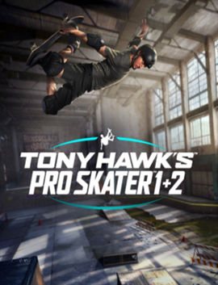

Tony Hawk's Pro Skater 1+2
Tony Hawk's Pro Skater 1 + 2 é um jogo eletrônico de skate desenvolvido pela Vicarious Visions e publicado pela Activision. Foi lançado em 4 de setembro de 2020 para Microsoft Windows, PlayStation 4 e Xbox One.
Jogue os jogos totalmente remasterizados Tony Hawk's™ Pro Skater™ e Tony Hawk's™ Pro Skater™ 2 em uma coleção épica reconstruída desde o início com incrível qualidade HD.
Ande de skate como o lendário Tony Hawk e outros da lista original de profissionais do jogo e mais novos profissionais. Ouça músicas da trilha sonora que definiu a época junto com novas músicas. Faça combinações insanas de truques com o manuseio icônico da série Tony Hawk's™ Pro Skater™.